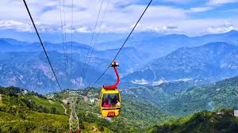
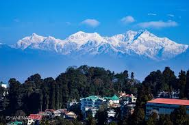
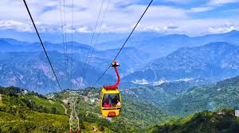
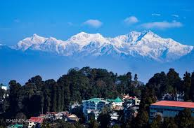
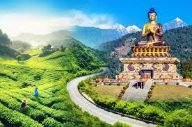
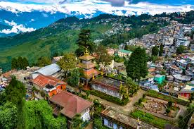
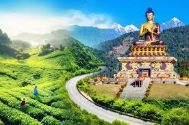
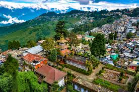

Tiger Hill sunrise
Early-morning panorama of Kanchenjunga and Himalayan ridges.
Darjeeling sits on ridges above the plains with tea gardens, colonial-era charm and broad Himalayan panoramas. Its compact town and nearby hill villages make it easy to combine short hikes, tea-estate visits and cultural stops.
The UNESCO-listed Darjeeling Himalayan Railway (toy train) and Tiger Hill sunrise over Kanchenjunga are signature experiences. Expect cool mornings, quick weather changes and strong tea.
Early-morning panorama of Kanchenjunga and Himalayan ridges.
Historic toy train route through hairpins and tea slopes.
Walk or tour working estates to learn about tea production.
Scenic loop with viewpoint and landscaped gardens.
Pre-dawn drive or early morning trek to Tiger Hill for an unforgettable Kanchenjunga sunrise.
Historic narrow-gauge ride between New Jalpaiguri / Ghum and Darjeeling. Iconic engineering and views.
Guided estate tours explain plucking, processing and tasting of Darjeeling tea.
Choose based on how many sunrises or estate visits you want.
Very tight
Good pace
4–6 days
Central, walkable to shops and cafes; good for first-time visitors.
Best for easy access to town.
Peaceful guesthouses with valley views and calmer nights.
Good for photography and early starts.
Unique stays inside working plantations for an immersive tea experience.
Ideal for longer, slower trips.

 



 



Practical habits for cold mornings, transport and views.